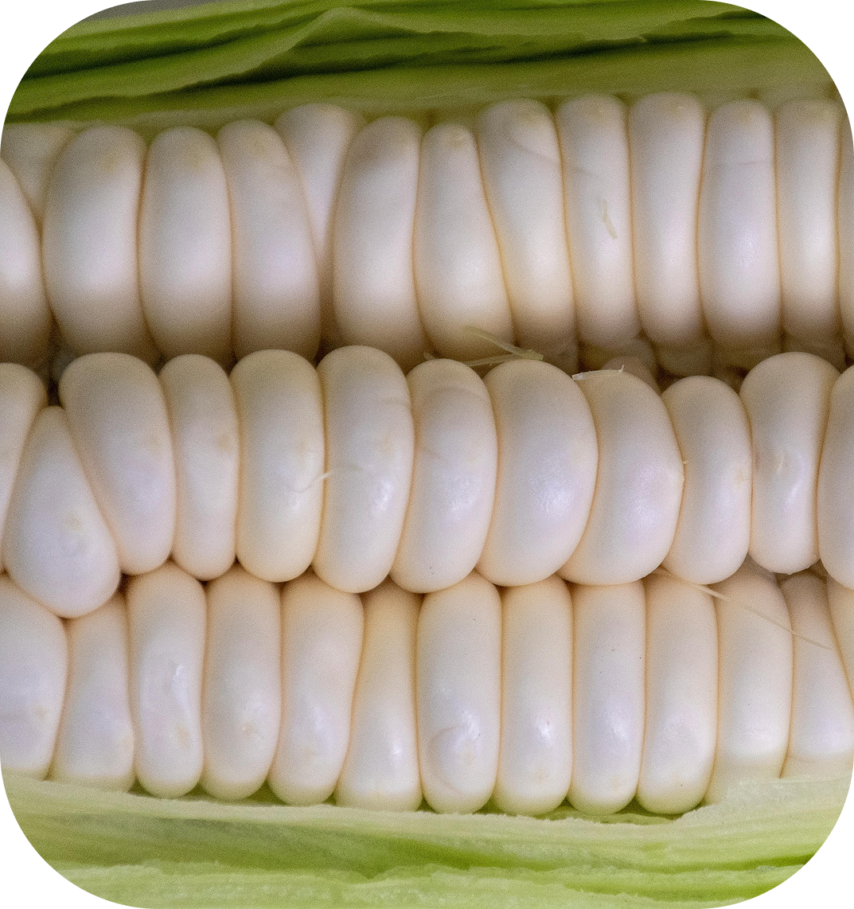

Talleres presenciales y virtuales de gastronomía regional que combinan preparación de platos típicos y su historia cultural.
Descubre la riqueza de nuestro Perú
Un viaje visual por nuestras tradiciones, sabores y paisajes únicos.


Propósito
Nuestro propósito es compartir y preservar la riqueza cultural de nuestra región, utilizando el entorno digital como puente entre las tradiciones y las nuevas generaciones. Creemos que la cultura es un tesoro vivo que se fortalece al ser compartido, y que cada persona, sin importar su origen, tiene el poder de aprender, inspirarse y mantener encendida la llama de nuestra identidad, porque al conocer nuestras raíces, descubrimos nuestro futuro.
Misión
Crear un espacio digital interactivo que promueva la gastronomía, música, arte, lenguas originarias y costumbres del Perú, acercando estas manifestaciones culturales a jóvenes y adultos de forma atractiva y participativa.
Visión
Ser la plataforma cultural más reconocida del Perú, referente en la difusión creativa de nuestras raíces y puente entre generaciones, comunidades y el mundo.
valores
- Respeto por la diversidad y las tradiciones.
- Autenticidad en cada historia y contenido.
- Inclusión de todas las voces y regiones.
- Creatividad para mostrar la cultura de forma innovadora.
- Colaboración entre comunidades, artistas y público.
¡Actividades extraordinarias!
Programa educativo para conectar estudiantes con comunidades indígenas y preservar saberes ancestrales como música, tejido.
Iniciativas de muralismo participativo en barrios y comunidades rurales que plasman narrativas locales.